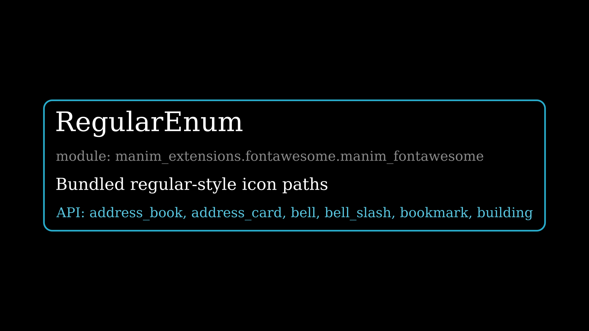

RegularEnum¶
- class manim_extensions.fontawesome.manim_fontawesome.RegularEnum(*values)[source]¶
Bases:
EnumBundled regular-style icon paths.
Attributes
- calendar_plus = os.fspath(regular_dir / 'calendar-plus.svg')¶
- folder = os.fspath(regular_dir / 'folder.svg')¶
- face_kiss = os.fspath(regular_dir / 'face-kiss.svg')¶
- file_video = os.fspath(regular_dir / 'file-video.svg')¶
- address_card = os.fspath(regular_dir / 'address-card.svg')¶
- id_badge = os.fspath(regular_dir / 'id-badge.svg')¶
- square_caret_left = os.fspath(regular_dir / 'square-caret-left.svg')¶
- square_plus = os.fspath(regular_dir / 'square-plus.svg')¶
- face_laugh = os.fspath(regular_dir / 'face-laugh.svg')¶
- lightbulb = os.fspath(regular_dir / 'lightbulb.svg')¶
- face_kiss_beam = os.fspath(regular_dir / 'face-kiss-beam.svg')¶
- copy = os.fspath(regular_dir / 'copy.svg')¶
- circle_check = os.fspath(regular_dir / 'circle-check.svg')¶
- square_caret_right = os.fspath(regular_dir / 'square-caret-right.svg')¶
- calendar = os.fspath(regular_dir / 'calendar.svg')¶
- envelope_open = os.fspath(regular_dir / 'envelope-open.svg')¶
- bell_slash = os.fspath(regular_dir / 'bell-slash.svg')¶
- calendar_days = os.fspath(regular_dir / 'calendar-days.svg')¶
- circle_down = os.fspath(regular_dir / 'circle-down.svg')¶
- chess_knight = os.fspath(regular_dir / 'chess-knight.svg')¶
- rectangle_xmark = os.fspath(regular_dir / 'rectangle-xmark.svg')¶
- square_check = os.fspath(regular_dir / 'square-check.svg')¶
- hand_scissors = os.fspath(regular_dir / 'hand-scissors.svg')¶
- comment_dots = os.fspath(regular_dir / 'comment-dots.svg')¶
- file_zipper = os.fspath(regular_dir / 'file-zipper.svg')¶
- face_smile_wink = os.fspath(regular_dir / 'face-smile-wink.svg')¶
- image = os.fspath(regular_dir / 'image.svg')¶
- map_ = os.fspath(regular_dir / 'map.svg')¶
- star_half_stroke = os.fspath(regular_dir / 'star-half-stroke.svg')¶
- rectangle_list = os.fspath(regular_dir / 'rectangle-list.svg')¶
- circle_play = os.fspath(regular_dir / 'circle-play.svg')¶
- hourglass = os.fspath(regular_dir / 'hourglass.svg')¶
- flag = os.fspath(regular_dir / 'flag.svg')¶
- face_flushed = os.fspath(regular_dir / 'face-flushed.svg')¶
- eye_slash = os.fspath(regular_dir / 'eye-slash.svg')¶
- chess_pawn = os.fspath(regular_dir / 'chess-pawn.svg')¶
- file_lines = os.fspath(regular_dir / 'file-lines.svg')¶
- comments = os.fspath(regular_dir / 'comments.svg')¶
- circle_left = os.fspath(regular_dir / 'circle-left.svg')¶
- compass = os.fspath(regular_dir / 'compass.svg')¶
- file_image = os.fspath(regular_dir / 'file-image.svg')¶
- heart = os.fspath(regular_dir / 'heart.svg')¶
- paper_plane = os.fspath(regular_dir / 'paper-plane.svg')¶
- face_grin_squint_tears = os.fspath(regular_dir / 'face-grin-squint-tears.svg')¶
- comment = os.fspath(regular_dir / 'comment.svg')¶
- clock = os.fspath(regular_dir / 'clock.svg')¶
- keyboard = os.fspath(regular_dir / 'keyboard.svg')¶
- object_group = os.fspath(regular_dir / 'object-group.svg')¶
- user = os.fspath(regular_dir / 'user.svg')¶
- face_smile_beam = os.fspath(regular_dir / 'face-smile-beam.svg')¶
- handshake = os.fspath(regular_dir / 'handshake.svg')¶
- credit_card = os.fspath(regular_dir / 'credit-card.svg')¶
- circle_up = os.fspath(regular_dir / 'circle-up.svg')¶
- face_frown_open = os.fspath(regular_dir / 'face-frown-open.svg')¶
- file_audio = os.fspath(regular_dir / 'file-audio.svg')¶
- note_sticky = os.fspath(regular_dir / 'note-sticky.svg')¶
- face_laugh_beam = os.fspath(regular_dir / 'face-laugh-beam.svg')¶
- window_restore = os.fspath(regular_dir / 'window-restore.svg')¶
- chess_bishop = os.fspath(regular_dir / 'chess-bishop.svg')¶
- font_awesome = os.fspath(regular_dir / 'font-awesome.svg')¶
- envelope = os.fspath(regular_dir / 'envelope.svg')¶
- hand_point_right = os.fspath(regular_dir / 'hand-point-right.svg')¶
- face_kiss_wink_heart = os.fspath(regular_dir / 'face-kiss-wink-heart.svg')¶
- window_maximize = os.fspath(regular_dir / 'window-maximize.svg')¶
- face_surprise = os.fspath(regular_dir / 'face-surprise.svg')¶
- face_meh = os.fspath(regular_dir / 'face-meh.svg')¶
- circle_question = os.fspath(regular_dir / 'circle-question.svg')¶
- file_excel = os.fspath(regular_dir / 'file-excel.svg')¶
- images = os.fspath(regular_dir / 'images.svg')¶
- moon = os.fspath(regular_dir / 'moon.svg')¶
- face_grin_squint = os.fspath(regular_dir / 'face-grin-squint.svg')¶
- building = os.fspath(regular_dir / 'building.svg')¶
- clone = os.fspath(regular_dir / 'clone.svg')¶
- face_frown = os.fspath(regular_dir / 'face-frown.svg')¶
- circle_pause = os.fspath(regular_dir / 'circle-pause.svg')¶
- folder_closed = os.fspath(regular_dir / 'folder-closed.svg')¶
- sun = os.fspath(regular_dir / 'sun.svg')¶
- face_sad_cry = os.fspath(regular_dir / 'face-sad-cry.svg')¶
- hand = os.fspath(regular_dir / 'hand.svg')¶
- hand_lizard = os.fspath(regular_dir / 'hand-lizard.svg')¶
- hourglass_half = os.fspath(regular_dir / 'hourglass-half.svg')¶
- floppy_disk = os.fspath(regular_dir / 'floppy-disk.svg')¶
- registered = os.fspath(regular_dir / 'registered.svg')¶
- window_minimize = os.fspath(regular_dir / 'window-minimize.svg')¶
- file_word = os.fspath(regular_dir / 'file-word.svg')¶
- square = os.fspath(regular_dir / 'square.svg')¶
- circle_stop = os.fspath(regular_dir / 'circle-stop.svg')¶
- face_laugh_wink = os.fspath(regular_dir / 'face-laugh-wink.svg')¶
- face_smile = os.fspath(regular_dir / 'face-smile.svg')¶
- face_angry = os.fspath(regular_dir / 'face-angry.svg')¶
- copyright_ = os.fspath(regular_dir / 'copyright.svg')¶
- file_code = os.fspath(regular_dir / 'file-code.svg')¶
- face_laugh_squint = os.fspath(regular_dir / 'face-laugh-squint.svg')¶
- chart_bar = os.fspath(regular_dir / 'chart-bar.svg')¶
- bell = os.fspath(regular_dir / 'bell.svg')¶
- lemon = os.fspath(regular_dir / 'lemon.svg')¶
- face_sad_tear = os.fspath(regular_dir / 'face-sad-tear.svg')¶
- hand_peace = os.fspath(regular_dir / 'hand-peace.svg')¶
- chess_rook = os.fspath(regular_dir / 'chess-rook.svg')¶
- trash_can = os.fspath(regular_dir / 'trash-can.svg')¶
- face_tired = os.fspath(regular_dir / 'face-tired.svg')¶
- face_grin_hearts = os.fspath(regular_dir / 'face-grin-hearts.svg')¶
- face_grin_tongue_wink = os.fspath(regular_dir / 'face-grin-tongue-wink.svg')¶
- file_pdf = os.fspath(regular_dir / 'file-pdf.svg')¶
- chess_king = os.fspath(regular_dir / 'chess-king.svg')¶
- message = os.fspath(regular_dir / 'message.svg')¶
- futbol = os.fspath(regular_dir / 'futbol.svg')¶
- calendar_check = os.fspath(regular_dir / 'calendar-check.svg')¶
- face_meh_blank = os.fspath(regular_dir / 'face-meh-blank.svg')¶
- life_ring = os.fspath(regular_dir / 'life-ring.svg')¶
- folder_open = os.fspath(regular_dir / 'folder-open.svg')¶
- pen_to_square = os.fspath(regular_dir / 'pen-to-square.svg')¶
- square_minus = os.fspath(regular_dir / 'square-minus.svg')¶
- face_rolling_eyes = os.fspath(regular_dir / 'face-rolling-eyes.svg')¶
- file = os.fspath(regular_dir / 'file.svg')¶
- closed_captioning = os.fspath(regular_dir / 'closed-captioning.svg')¶
- hand_back_fist = os.fspath(regular_dir / 'hand-back-fist.svg')¶
- hard_drive = os.fspath(regular_dir / 'hard-drive.svg')¶
- square_caret_down = os.fspath(regular_dir / 'square-caret-down.svg')¶
- face_grin_tears = os.fspath(regular_dir / 'face-grin-tears.svg')¶
- face_grin_beam = os.fspath(regular_dir / 'face-grin-beam.svg')¶
- eye = os.fspath(regular_dir / 'eye.svg')¶
- object_ungroup = os.fspath(regular_dir / 'object-ungroup.svg')¶
- id_card = os.fspath(regular_dir / 'id-card.svg')¶
- hand_point_up = os.fspath(regular_dir / 'hand-point-up.svg')¶
- calendar_xmark = os.fspath(regular_dir / 'calendar-xmark.svg')¶
- hospital = os.fspath(regular_dir / 'hospital.svg')¶
- square_full = os.fspath(regular_dir / 'square-full.svg')¶
- star = os.fspath(regular_dir / 'star.svg')¶
- face_grimace = os.fspath(regular_dir / 'face-grimace.svg')¶
- face_grin_beam_sweat = os.fspath(regular_dir / 'face-grin-beam-sweat.svg')¶
- square_caret_up = os.fspath(regular_dir / 'square-caret-up.svg')¶
- face_dizzy = os.fspath(regular_dir / 'face-dizzy.svg')¶
- calendar_minus = os.fspath(regular_dir / 'calendar-minus.svg')¶
- face_grin_tongue_squint = os.fspath(regular_dir / 'face-grin-tongue-squint.svg')¶
- clipboard = os.fspath(regular_dir / 'clipboard.svg')¶
- face_grin_tongue = os.fspath(regular_dir / 'face-grin-tongue.svg')¶
- hand_point_left = os.fspath(regular_dir / 'hand-point-left.svg')¶
- face_grin_stars = os.fspath(regular_dir / 'face-grin-stars.svg')¶
- circle_right = os.fspath(regular_dir / 'circle-right.svg')¶
- thumbs_down = os.fspath(regular_dir / 'thumbs-down.svg')¶
- face_grin_wink = os.fspath(regular_dir / 'face-grin-wink.svg')¶
- thumbs_up = os.fspath(regular_dir / 'thumbs-up.svg')¶
- hand_point_down = os.fspath(regular_dir / 'hand-point-down.svg')¶
- star_half = os.fspath(regular_dir / 'star-half.svg')¶
- circle_xmark = os.fspath(regular_dir / 'circle-xmark.svg')¶
- chess_queen = os.fspath(regular_dir / 'chess-queen.svg')¶
- face_grin = os.fspath(regular_dir / 'face-grin.svg')¶
- hand_pointer = os.fspath(regular_dir / 'hand-pointer.svg')¶
- hand_spock = os.fspath(regular_dir / 'hand-spock.svg')¶
- file_powerpoint = os.fspath(regular_dir / 'file-powerpoint.svg')¶
- address_book = os.fspath(regular_dir / 'address-book.svg')¶
- circle_dot = os.fspath(regular_dir / 'circle-dot.svg')¶
- bookmark = os.fspath(regular_dir / 'bookmark.svg')¶
- circle_user = os.fspath(regular_dir / 'circle-user.svg')¶
- newspaper = os.fspath(regular_dir / 'newspaper.svg')¶
- circle = os.fspath(regular_dir / 'circle.svg')¶
- face_grin_wide = os.fspath(regular_dir / 'face-grin-wide.svg')¶
- snowflake = os.fspath(regular_dir / 'snowflake.svg')¶
- gem = os.fspath(regular_dir / 'gem.svg')¶
- money_bill_1 = os.fspath(regular_dir / 'money-bill-1.svg')¶
- paste = os.fspath(regular_dir / 'paste.svg')¶
Examples
Example: RegularEnumOverview ¶

from manim import * from manim_extensions.fontawesome.manim_fontawesome import RegularEnum RegularEnumTarget = RegularEnum class RegularEnumOverview(Scene): def construct(self): public = [n for n in dir(RegularEnumTarget) if not n.startswith("_")] card = VGroup( Text('RegularEnum', font_size=36), Text('module: manim_extensions.fontawesome.manim_fontawesome', font_size=18, color=GREY), Text('Bundled regular-style icon paths', font_size=22), Text("API: " + ", ".join(public[:6]), font_size=18, color=BLUE), ).arrange(DOWN, aligned_edge=LEFT, buff=0.25) card.scale_to_fit_width(11.5).move_to(ORIGIN) frame = RoundedRectangle( width=12.1, height=card.height + 0.5, corner_radius=0.2, color=BLUE_D ).move_to(card) self.add(frame, card)
from manim_extensions.fontawesome.manim_fontawesome import RegularEnum icon_path = RegularEnum.folder.value